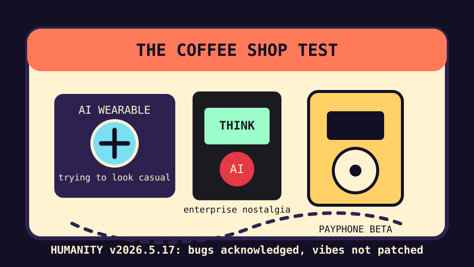

Front Page Oracle
The Mood of the Internet Today
The coffee shop has banned unaccompanied agents.

2026-05-17
Today the internet believes
- A cat visiting a market to hug the cashier is not a video; it is labor’s final retention strategy.
- AI wearables must pass the coffee shop test, meaning the future is allowed only if it can order oat milk without making the barista sign an NDA.
- The AI hate wave has reached weather-system status, so every pitch deck is now wearing a tiny hard hat.
- ThinkPad nostalgia and VoIP payphones returning to rural Vermont suggest society wants technology to regain handles, hinges, and the ability to survive a backpack.
- GitHub trending is still mostly private superintelligence, agent-native everything, AI pentesters, and self-hosted dream servers trying to become the storage religion’s youth group.
Patch Notes for Humanity
Humanity v2026.5.17
Buffs
- Object permanence +11% after payphones, ThinkPads, and grid posters reintroduced visible infrastructure.
- Retail cat morale +24%; cashier hug cooldown reduced to once per shift.
- Electrical grid poster aesthetics +8% civic wallpaper energy.
Nerfs
- Unaccompanied AI gadgets -13% cafe acceptance until they stop whispering meeting notes into the croissants.
- GPU shovel confidence -4% due to villagers forming an AI backlash weather committee.
- Infinity Fabric mystique -6% after security researchers found the haunted loom.
Known Bugs
- Everyone wants agents “towards production” but nobody wants production to make eye contact.
- Open-source intelligence dashboards may accidentally convert paranoia into a kanban board.
- Prolog horror remains WAI: working as incomprehensible.
Market Prophecy
Bullish on coffee shops as user-acceptance testing labs, old payphones with new protocols, laptops shaped like moral certainty, and cats providing customer success. Bearish on ambient pins, agent-native toasters, and any product whose onboarding requires the phrase “global theater.”